30. Arizona Diamondbacks, Ketel Marte
 29. Pittsburg Pirates, Bryan Reynolds
29. Pittsburg Pirates, Bryan Reynolds
 28. Texas Rangers, Joey Gallo
28. Texas Rangers, Joey Gallo
 27. Colorado Rockies, Trevor Story
27. Colorado Rockies, Trevor Story
 26. Baltimore Orioles, Trey Mancini
26. Baltimore Orioles, Trey Mancini
 25. Kansas City Royals, Andrew Benintendi
25. Kansas City Royals, Andrew Benintendi
 24-20
24-20
24. Detroit Tigers, Casey Mize
 23. Minnesota Twins, Andrelton Simmons
23. Minnesota Twins, Andrelton Simmons
 22. Miami Marlins, Starling Marte
22. Miami Marlins, Starling Marte
 21. Chicago White Sox, Jose Abreu
21. Chicago White Sox, Jose Abreu
 20. Cincinatti Reds, Nick Castellanos
20. Cincinatti Reds, Nick Castellanos
 19-15
19-15
19. Millwaukee Brewers, Christian Yellich
 18. Chicago Cubs, Kris Bryant
18. Chicago Cubs, Kris Bryant
 17. Los Angeles Angels of Anaheim, Shohei Ohtani
17. Los Angeles Angels of Anaheim, Shohei Ohtani
 16. Seattle Mariners, Mitch Haniger
16. Seattle Mariners, Mitch Haniger
 15. Philladelphia Phillies, J.T. Realmuto
15. Philladelphia Phillies, J.T. Realmuto
 14-10
14-10
14. New York Yankees, Gerrit Cole
 13. St. Louis Cardinals, Paul Goldshmidt
13. St. Louis Cardinals, Paul Goldshmidt
 12. Atlanta Braves, Freddie Freeman
12. Atlanta Braves, Freddie Freeman
 11. Cleveland Indians, Shane Bieber
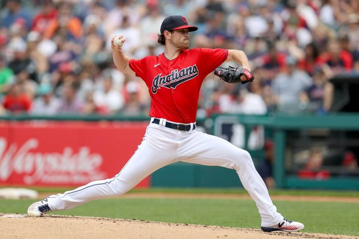10. Toronto Blue Jays, Vladmir Gurerro Jr.
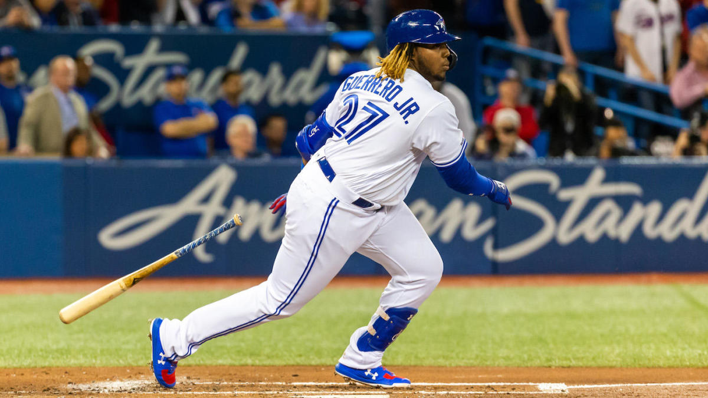9-6
11. Cleveland Indians, Shane Bieber
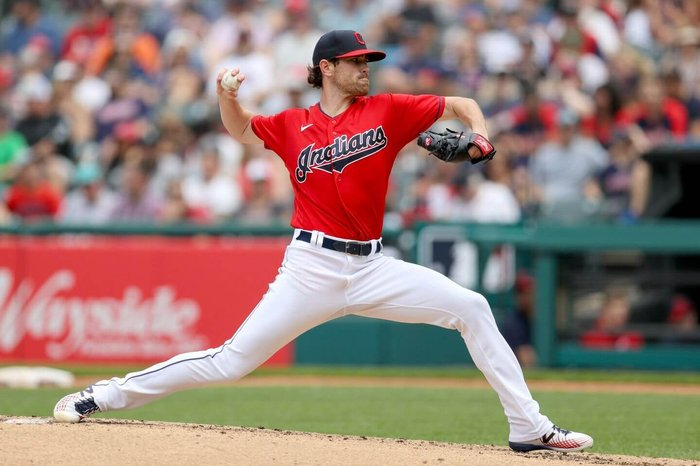10. Toronto Blue Jays, Vladmir Gurerro Jr.
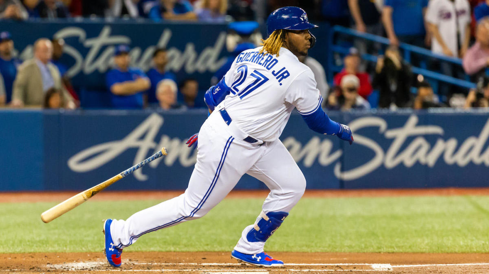9-6
9. Oakland Athletics, Jesus Luzardo
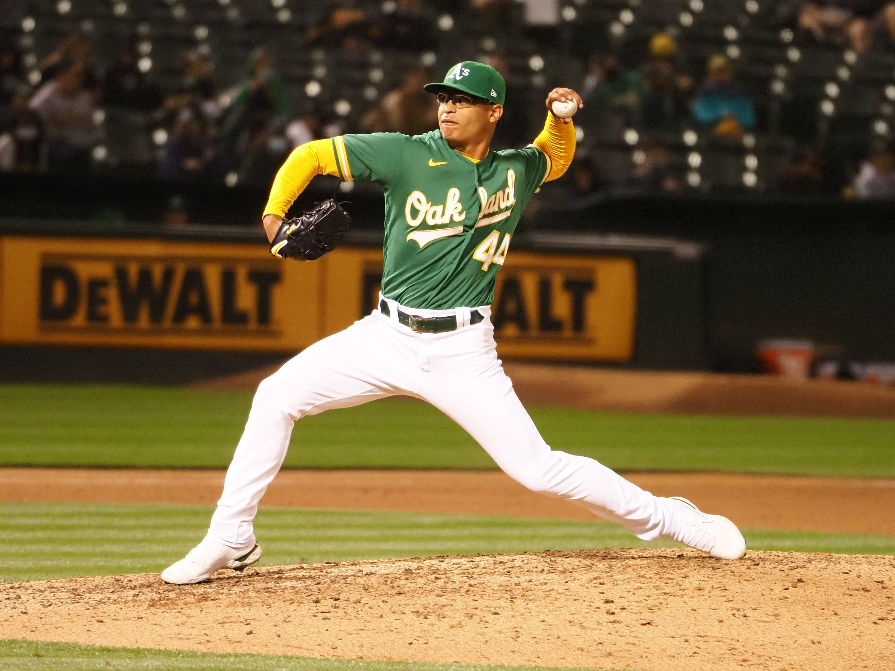8. Tampa Bay Rays, Andrew Kittredge 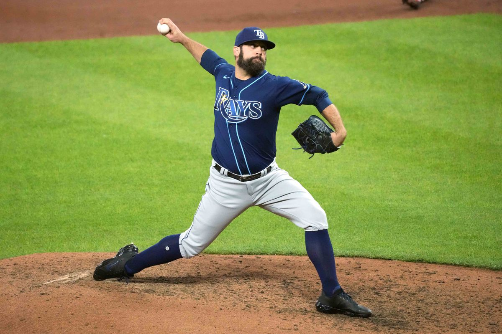7. Houston Astros, Jose Altuve (Cheater) 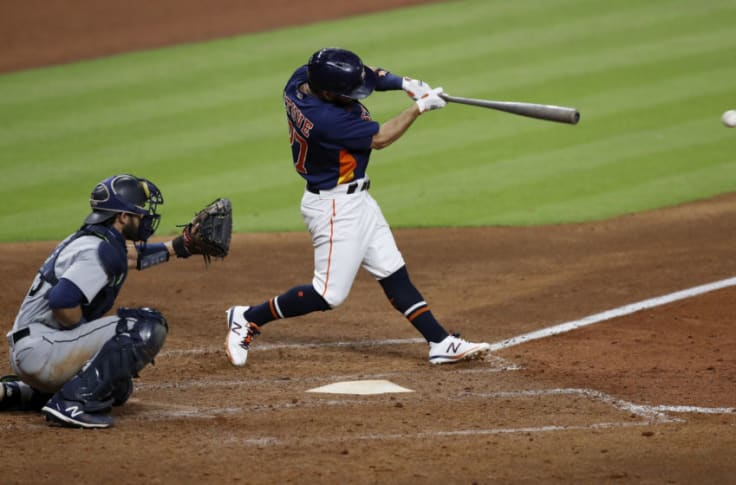6. Washington Nationals, Max Scherzer 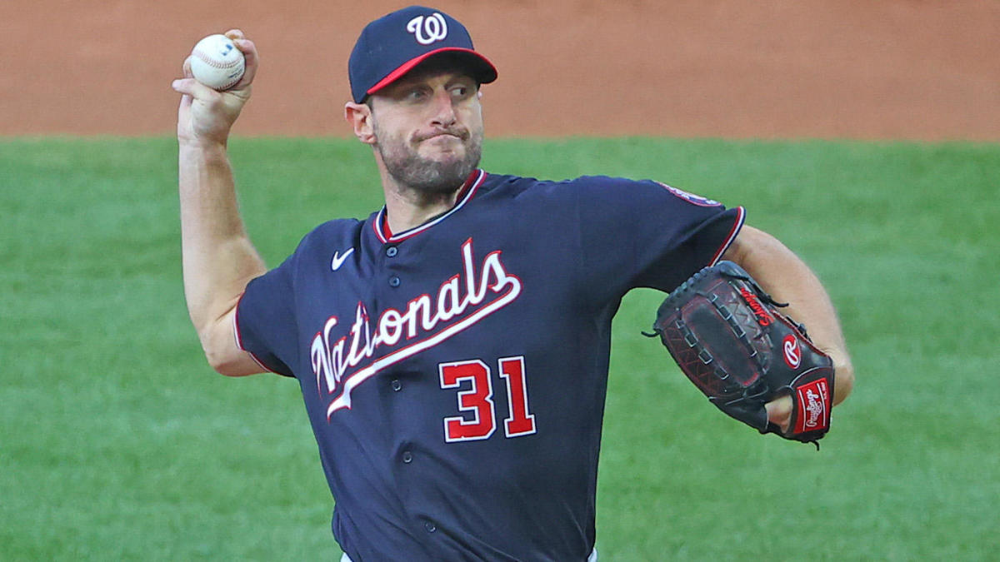5-15. New York Mets, Jacob DeGrom
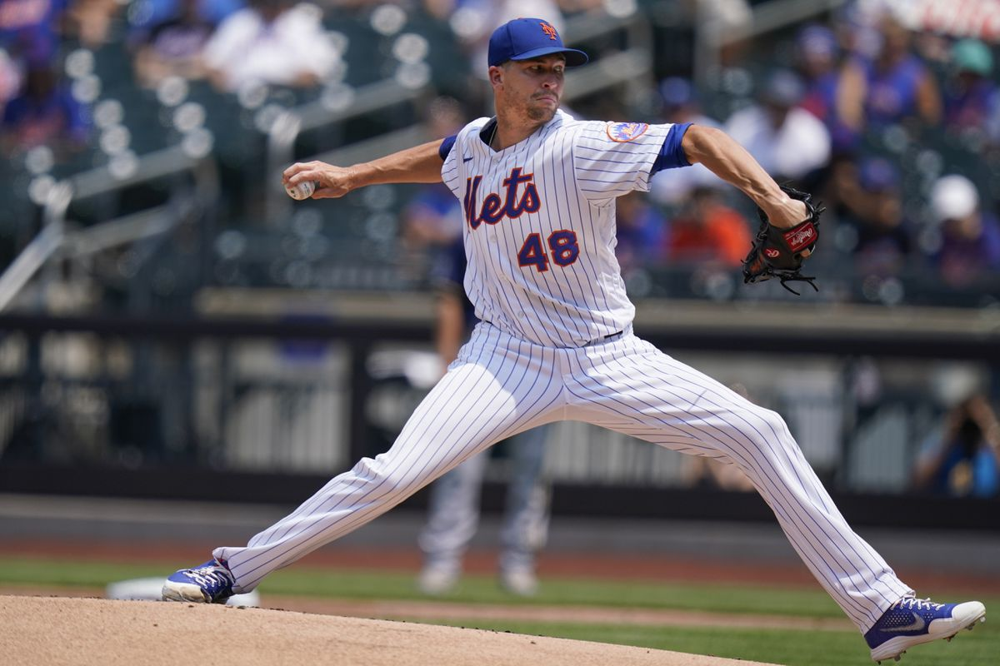4. San Diego Padres, Manny Machado 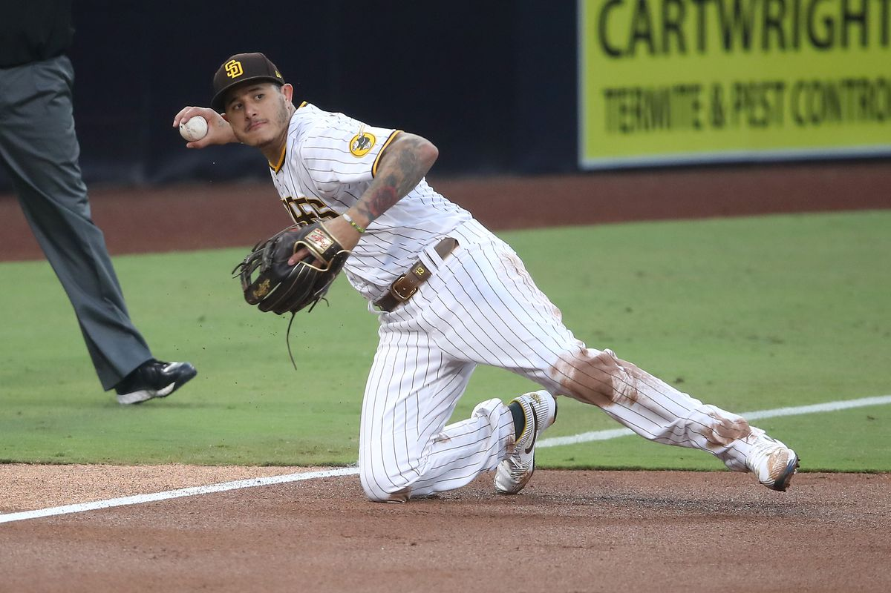3. Boston Red Sox, Rafeal Devers 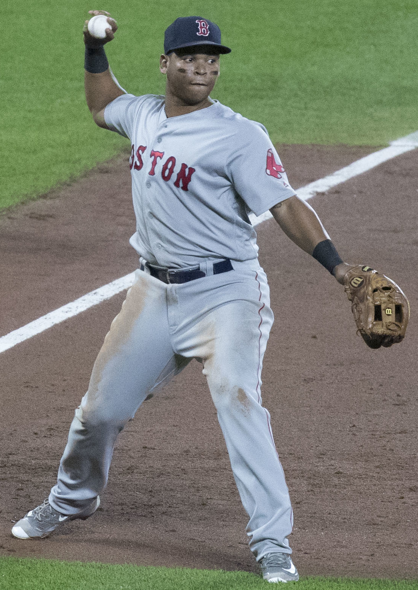2. Los Angeles Dodgers, Mookie Betts 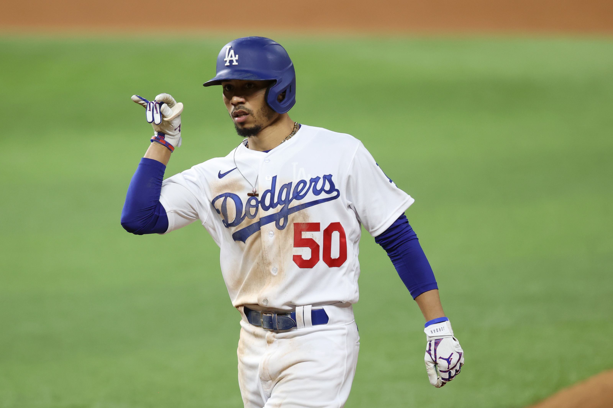1. San Fransisco Giants, Mike Yasterzemski 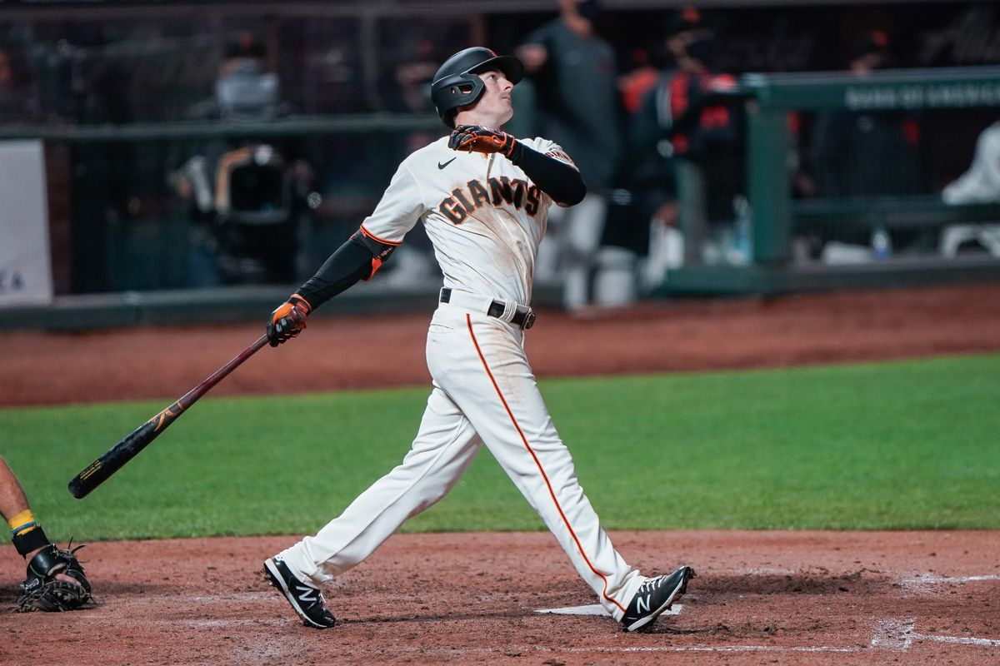